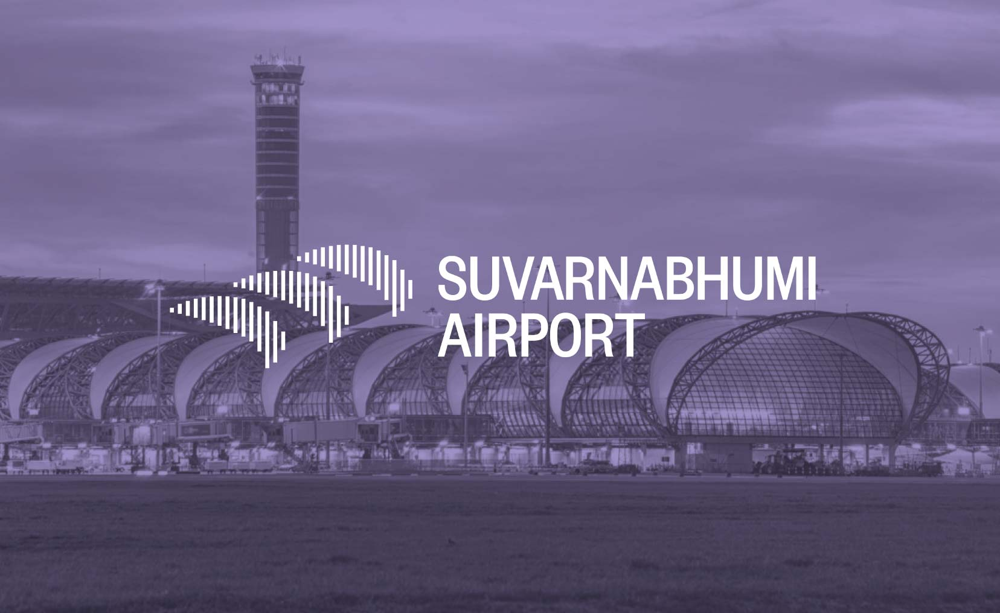
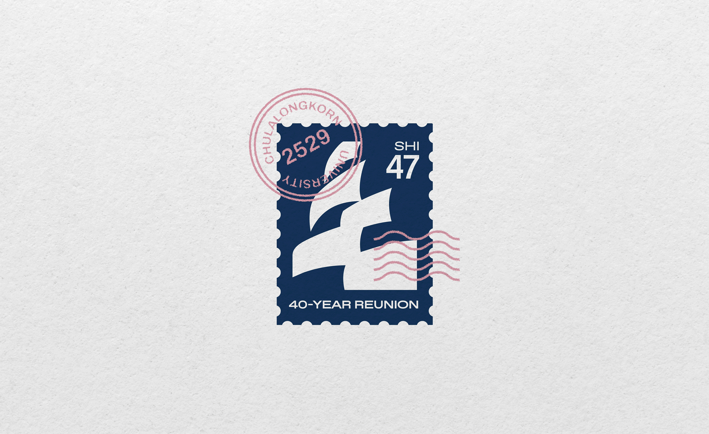
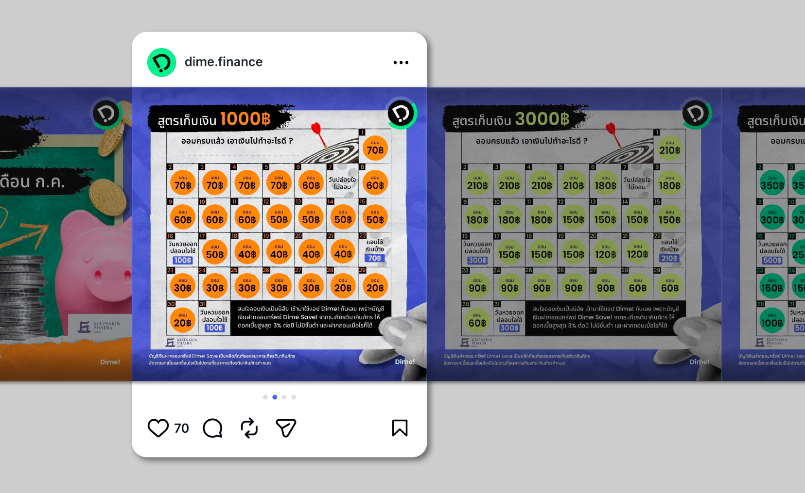
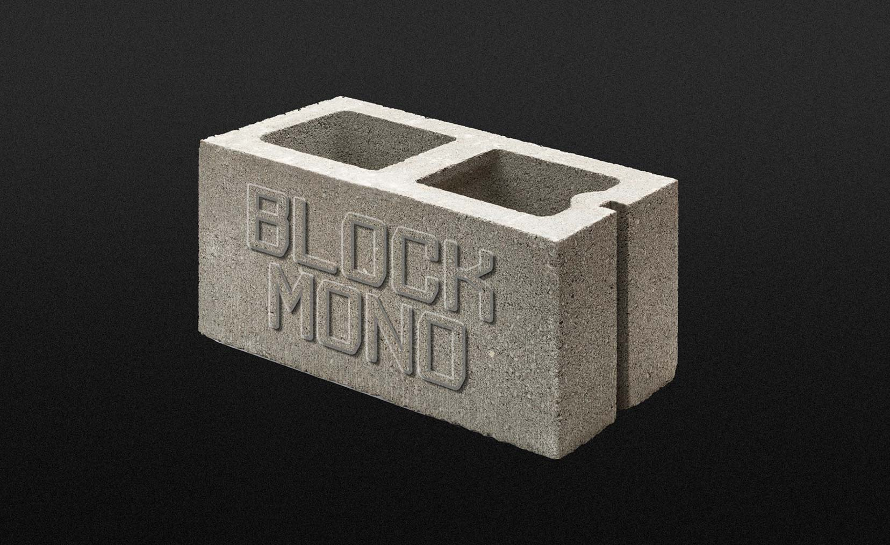
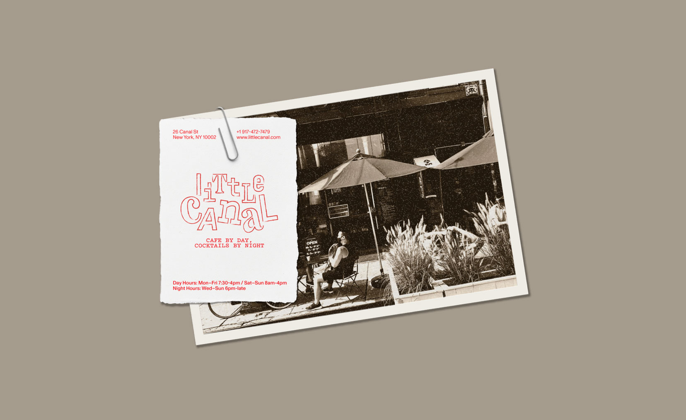

(2026)
KKP Chinese New Year 2026
Key Artwork / Graphic Design / Packaging Design
Project Type: Freelance
A contemporary interpretation of traditional Chinese New Year red packets, designed for Kiatnakin Phatra Bank.

(2024)
Historic Monuments of Ancient Kyoto: Kyoto, Uji, and Otsu Cities
Branding & Identity / Publication Design
Project Type: University Coursework
Hypothetical Identity and Editorial Design for the UNESCO World Heritage Site: "Historic Monuments of Ancient Kyoto: Kyoto, Uji, and Otsu Cities”.

(2025)
Dynamic Identities: Suvarnabhumi Airport Rebrand
Branding & Identity / Graphic Design / Motion
Project Type: University Coursework
Hypothetical rebranding project of Bangkok Suvarnabhumi Airport (BKK), drawing inspiration from the airport's architectural structure.

(2025)
Yantra Reverie (KKP New Year 2026)
Key Artwork / Illustration / Graphic Design
Project Type: Freelance
Design for Kiatnakin Phatra's 2026 New Years' Gift Collection, as well as application across various products.

(2025)
SHI47 Reunion Party
Graphic Design
Project Type: Freelance

(2024)
Dime! Internship
Graphic Design
Project Type: Internship

(2024)
Block Mono
Typeface Design / Graphic Design
Project Type: University Coursework
A contemporary monospaced sans-serif typeface that draws inspiration from industrial design, architecture, and construction, subtly infused with a touch of calligraphic flair.

(2024)
Little Canal Rebrand
Branding & Identity / Graphic Design
Project Type: University Coursework
Hypothetical rebrand of Little Canal, a neighborhood coffee shop and bar in New York City’s Chinatown.

(2025)
Luck for Sale: The Economy of Belief (Parsons CD Senior Thesis)
Publication Design / Branding & Identity / Graphic Design
Project Type: University Coursework
Parsons Communication Design Thesis, exploring and providing a critical commentary on the intersection of belief systems, material culture, and capitalism in contemporary Thailand through a design-driven lens.